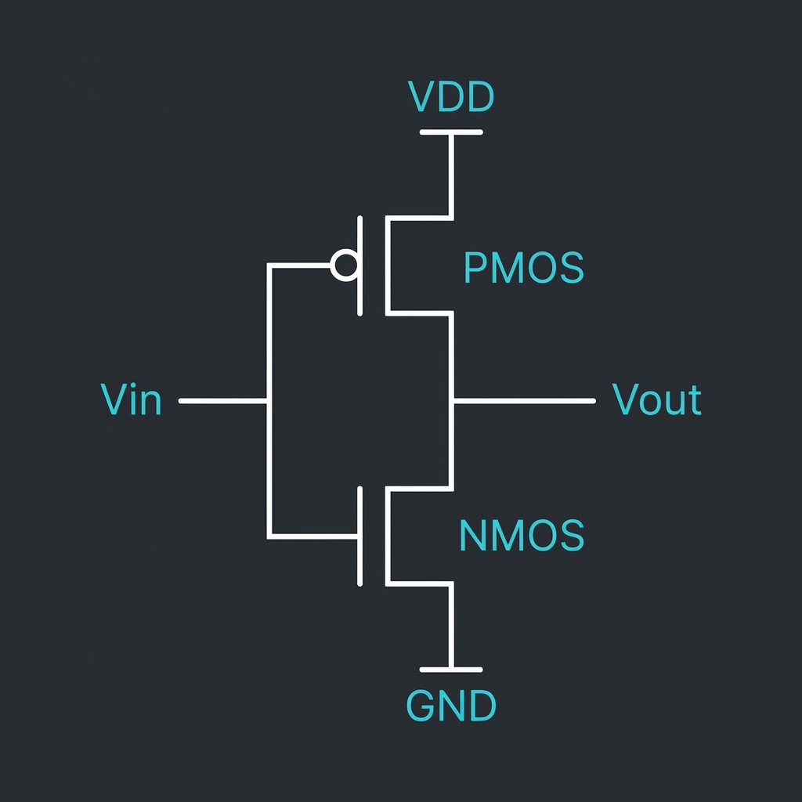

An automated MATLAB sizing tool for folded cascode operational transconductance amplifiers using the gm/ID methodology — sweeping inversion coefficients against TSMC 180 nm lookup tables to find the Pareto front of gain-bandwidth, power, and area.
This project presents an automated sizing tool for folded cascode operational transconductance amplifiers (OTAs) using the gm/ID design methodology. The tool enables rapid design space exploration and achieves optimal gain-bandwidth tradeoffs through systematic optimization of four key sizing knobs.
The optimizer reduces the sizing problem to four independent knobs: (1) input-pair gm/ID, (2) cascode gm/ID, (3) branch current ratio κ = Icasc/Itail, and (4) input-pair channel length. Everything else — widths, bias voltages, output-stage sizing — falls out analytically from the lookup tables.

The transconductance of a MOSFET in saturation:
DC gain of the folded cascode OTA:
Cascode output resistance:
All values below are post-layout with parasitics extracted, typical corner at 27 °C.
| Parameter | Target | Achieved | Margin | Status | Condition |
|---|---|---|---|---|---|
| DC Gain Av0 | > 60 dB | 72 dB | +12 dB | Pass | Vout = 0.9 V |
| GBW ƒu | > 100 MHz | 110 MHz | +10% | Pass | CL = 2 pF |
| Phase Margin φm | > 60° | 67° | +7° | Pass | Unity-gain |
| Power Ptot | < 1 mW | 0.82 mW | −18% | Pass | VDD = 1.8 V |
| Slew Rate SR | > 80 V/µs | 94 V/µs | +17.5% | Pass | Step = 1 V |
| Input-ref. Noise vn,in | < 8 nV/√Hz | 6.4 nV/√Hz | −20% | Pass | f = 1 MHz |
| Offset (3σ) Vos | < 5 mV | 5.8 mV | +16% | Fail | MC · 500 runs |
The core idea: transistor behaviour, normalised by current, is mostly independent of width. Sweep L over a handful of values and VGS from weak to strong inversion, tabulate gm/ID, fT, and intrinsic gain — then sizing becomes a lookup instead of an iterative solve.
This tool parameterises each branch by its inversion coefficient, sweeps the four degrees of freedom, and evaluates GBW, noise, and gain analytically from the LUTs. A full Pareto sweep finishes in under 4 seconds on a laptop.
The inner loop is branch-and-bound over the four degrees of freedom. LUTs are generated once with a Cadence-driven sweep and cached on disk.
% gm/ID sizing for a folded-cascode OTA
% req - target struct: GBW, PM, power, gain, CL
% lut - precomputed gm/ID lookup (TSMC 180n, N & P)
gmId_in = 10:0.5:22; % input-pair sweep
gmId_casc = 5:0.5:12; % cascode sweep
L_in = [0.18 0.25 0.35 0.5]; % µm
kappa = 0.2:0.05:0.5; % branch ratio
best = struct('cost', inf);
for gi = gmId_in, for gc = gmId_casc
for L = L_in, for k = kappa
cand = solveBranch(gi, gc, L, k, req, lut);
if meetsSpec(cand, req) && cand.power < best.cost
best = cand; best.cost = cand.power;
end
end, end
end, end
spec = annotate(best, req); % adds margins + pass/fail
A runnable Python equivalent — edit gmid_target and hit Run:
import numpy as np
# Simulated PDK characterisation data
gmid_vec = np.linspace(5, 25, 200)
ft_vec = 45e9 * np.exp(-0.065 * (gmid_vec - 10)) * (1 + 0.3 * np.exp(-(gmid_vec - 5)))
gds_vec = 0.05 * np.exp(-0.04 * gmid_vec)
idw_vec = 12e-6 * np.exp(-0.09 * (gmid_vec - 5))
# Design inputs (edit these)
gmid_target = 15.0 # V^-1 — try 8 (fast) to 22 (low power)
ID = 100e-6 # A
CL = 2e-12 # F
gm = gmid_target * ID
fT = np.interp(gmid_target, gmid_vec, ft_vec)
gds = np.interp(gmid_target, gmid_vec, gds_vec) * ID
IDW = np.interp(gmid_target, gmid_vec, idw_vec)
W = ID / IDW
Av = gm / gds
GBW = gm / (2 * np.pi * CL)
PM_est = 90 - np.degrees(np.arctan(GBW / (fT * 0.3)))
print(f"gm/ID : {gmid_target:.1f} V⁻¹")
print(f"gm : {gm*1e3:.3f} mA/V")
print(f"W : {W:.2f} µm")
print(f"Av : {20*np.log10(Av):.1f} dB")
print(f"GBW : {GBW/1e6:.1f} MHz")
print(f"PM est : ~{max(0,PM_est):.0f}° {'✓ Stable' if PM_est > 45 else '⚠ Marginal'}")Explore the design space interactively. Adjust gm/ID, bias current, and load capacitance to see how GBW, gain, and power respond in real time.